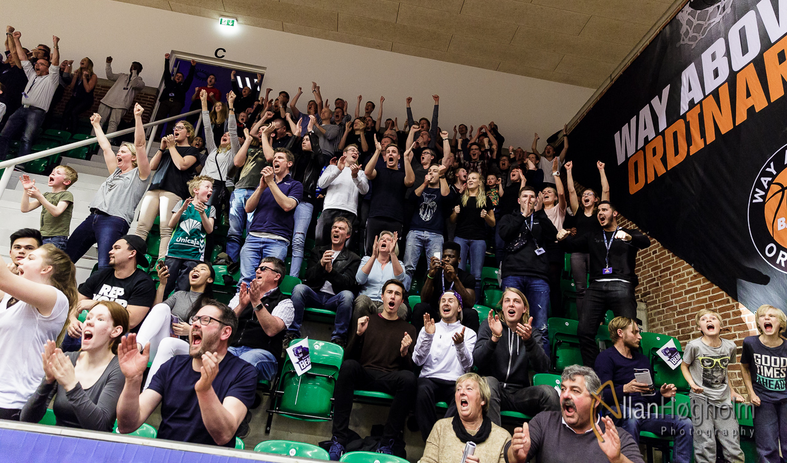

BASKETBALLKLUB VIL LEVERE DEN BEDSTE SPORTSOPLEVELSE

Basketball På Eliteniveau
Basketball klubben ”Bakken Bears” er en af de største klubber i Århus, som tilbyder sporten basketball. Holdet er udsprunget fra det tidligere IK Skovbakken Basketball, som blev grundlagt i 1962. Holdet ligger til ude i Risskov. Udover utallige hold lige fra barndomsalderen til professionel udøvelse, er holdet bag de såkaldte ”Bjørne” også utroligt bredt. Bl.a. en bred trænerstab værner om Bakken bears spillerne, og hjælper dem med at forblive i topform.
Seriøse trænere
Tidligere håndboldudøver, samt Champions League vinder Line Hovgaard Hansen holder nu til som fysisk træner hos bjørnene. Her har hun ansvaret for spillernes fysiske form, samt for restitutions- og skadeforebyggende træning. ”Drengene er nu som en familie nummer 2 for mig. Jeg gør alt hvad jeg kan for at hjælpe dem, så vi sammen kan nå de mål klubben har sat” - udtaler Line Hovgaard Hansen.
Sammen om at nå målene
Målet er sammen at dele glæden og passionen for basketballspillet, samt give publikummet en unik oplevelse. Derudover møder bjørnene de udfordringer der kommer gennem ansvarlighed, fællesskab, kontinuitet og hårdt arbejde. ”Vi vil hinanden” udtaler cheftræner Steffen Wich.

Tilskuerne Sitre Spændt Med
som tilskuere til en basketballkamp er der altid lagt op til nervepirrende spænding. Dette er også tilfældet i Risskov hos Bakken Bears. Næsten hver kamp byder på spænding, som kan mærkes helt ude i fingerspidsen. "Der er altid fantastisk stemning hos publikummet. Vi både jubler, og ærger os med holdet. I en sport som basketball, hvor alt kan ændres i løbet af sekunder, er spændingen altid helt i top. Råben og skrigen sker derfor nogle gange helt ubevidst" siger en leende sæsonkort-køber Henning Primdal.